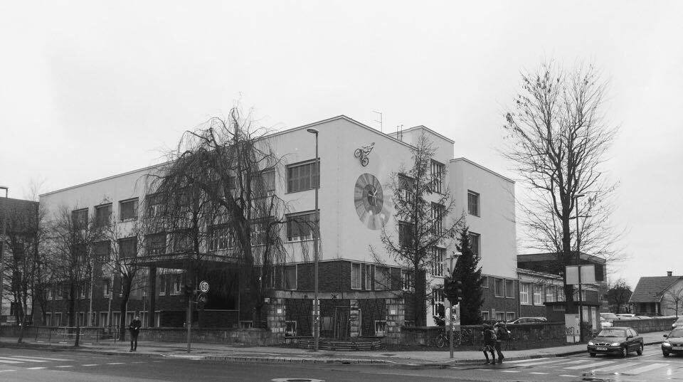

Smo dijakinje 2.e letnika na Gimnaziji Vič in za temo naloge smo si izbrale feminizem v modernih družbah. Za to temo smo se odločile, ker je položaj žensk v družbi in vse v povezavi z žensko tematiko v današnji moderni družbi tema številnih družboslovnih raziskav.
Položaj žensk se je v primerjavi s preteklostjo dosti izboljšal, vendar ženske še vedno ostajajo v podrejenem položaju. V nekaterih državah je to bolj opazno kot v drugih, kjer se situacija postopoma izboljšuje.
V raziskovalni nalogi smo želele predstaviti položaj žensk v politiki, družini, različnih kulturah in religijah, v empiričnem delu pa smo izvedle anketo o feminizmu.
